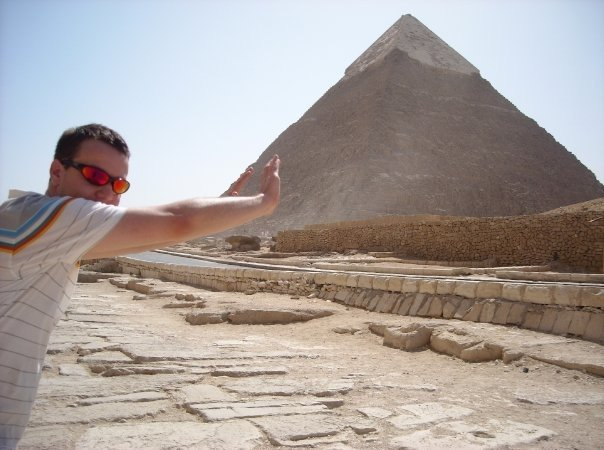

thomas michael wallace.
Engineer (although no one ever knows what that is...) and collector of interesting skills living in Farnborough, Hampshire (in the UK). Currently 29 years of age, reasonably well travelled and always looking to do something constructive in what little spare time I collect, although I wouldn't say no to a drink.
Drop me a line if you want to know more.